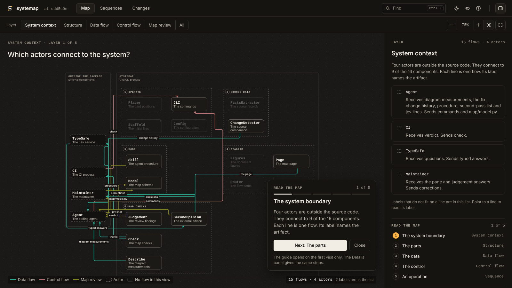

System map · Python and TypeScript
A map of your software system, made from its source code
Your coding agent writes the components, the flows between them, and the sequences, and each component names its source modules. You and your agents can examine the map on one page, and CI compares it with the code at each change.
uv tool install systemap
The map of the systemap repository, in the Map view. Select the image to open the live page.
How it works
Source facts, an authored model, and checks
A program reads the facts that the source code gives. A coding agent writes the decisions that the facts cannot give. The checks compare the two.
-
The extractor reads the source code
systemap extractreads the modules, public names, imports, test references, and entry points of a Python or TypeScript repository. It writes these source facts todocs/map/map.json.systemap init systemap extract -
The coding agent writes the model
The facts do not show which modules have one function, or the direction and the artifact of a flow. Your coding agent reads the code with the systemap skill. Then it writes
map/model.py: the components, the flows, and the sequences. Give it the instruction thatsystemap initprints:Make a map of this repository with systemap. Obey the systemap skill and its writing rules. -
The checks compare the model with the facts
systemap checkrejects contradictions, for example a module that no component claims, or a flow line through an unrelated component.systemap judgementlists possible errors for a person or an agent to examine. The workflow fromsystemap initruns these commands in CI.systemap check systemap judgement --strict
A result with no findings shows
- Each source module is in one component.
- Each entry name and interface name is in the source modules of its component.
- No flow line goes through an unrelated component, and no labels touch.
- The facts, the page, and the figures agree with the source code and the model.
It does not show
- That the program does what a flow or a sequence says. The checks do not run the program.
- That each component assignment is correct. The rules use names and imports, and they can miss a module in an incorrect component.
- The direction or the artifact of a structural flow. An import does not show them.
- All function calls. The map contains authored flows only.
The page
Three views, and one question in each view
systemap render writes the page as one HTML file that makes no external requests. The page has two themes, Ink and Paper, and a layout for a phone.
-
Map
What are the components and their connections?
Each layer shows the flows for one question, for example System context, Data flow, or Control flow. Select a component to see its flows, its sequences, and its source modules.
-
Sequences
Which steps make one operation?
A sequence starts at an entry point. The page shows the whole route, or one step at a time with a note. The model gives the order of the steps. It is not a record of a program run.
-
Changes
What did this change touch?
The Changes view compares two revisions. It marks the components with changed source code and the flows that need a new source review.
Pull requests
What did a pull request do to the system?
Git shows the changed lines. systemap shows the changed components, flows, and claims.
systemap delta compares the source facts at two Git commits. Each line gives a change and the action that the map needs. The workflow from systemap init runs the command on each pull request and writes the lines in the job log.
delta: d6161f8^ (fae3ef3) -> d6161f8: 2 modules changed, 1 added, 0 removed, 0 moved. 2 of 16 components specified
The map needs an update (2):
source review: CLI has changed code in systemap.cli, systemap.serve. Compare its description, flows, sequences, and invariants with the new source.
source review: Page has changed code in systemap.page_live. Compare its description, flows, sequences, and invariants with the new source.
No action is necessary for these changes (1):
added: systemap.page_live, with a claim in Page
next to the change:
CLI has the most changed modules. It has flows to 15 of the 16 components, so the list gives no useful context.
Do the action in each line under "The map needs an update". Then run systemap refresh && systemap check && systemap judgement --strictThe output of systemap delta --base d6161f8^ --head d6161f8 --brief in this repository. Commit d6161f8 added systemap live.
By default, a necessary map update gives a warning, and the job passes. With systemap init --strict-ci, a necessary map update makes the job fail. systemap render --base REF adds a comparison with that revision to the page, in the Changes view.
Coding agents
How does a coding agent use systemap?
An agent that can read files and run commands can use the skill. Claude Code also has a plugin with a live map.
-
The skill
systemap initwrites the systemap skill into the repository. The skill gives the agent the procedure: extract the facts, write the model, do the checks, render the page, and examine the source code again. At the end, the agent gives a completion report with its uncertain claims. -
The Claude Code plugin
Install the plugin from the marketplace of this repository:
/plugin marketplace add 0xfauzi/systemap /plugin install systemap@systemap -
The live map
systemap liverenders the map of the working tree and supplies it on 127.0.0.1. When a source, model, or configuration file changes, it renders the map again. The browser keeps the view, the layer, the selection, and the sequence step.In Claude Code,
/mapstarts the live map. A line above the prompt shows its state, and a pane shows the map update lines.systemap reads
map/model.pyas data and does not run its code. Trust and security tells what systemap reads and runs.
Limits
What systemap does not do
Read these limits before you use a result with no findings as evidence.
- A check is not a test of the program. The checks compare the authored model with the source facts. They do not run the program, and they do not show its behavior.
- Python and TypeScript only. systemap reads Python, TypeScript, and TSX. It does not read framework-specific TypeScript routes.
- The map is authored. A person or an agent writes each component, flow, and sequence. Extraction does not show which modules have one function, or the direction of a flow.
- Evidence is a record. A current source review records that a person or an agent examined the source code. After a source change, the review is not current, and
systemap judgementgives a finding. - No network requests in the checks.
systemap checkandsystemap judgementmake no network requests. Other commands send requests to Jev, the TypeSafe model, only if you setTYPESAFE_API_KEY.